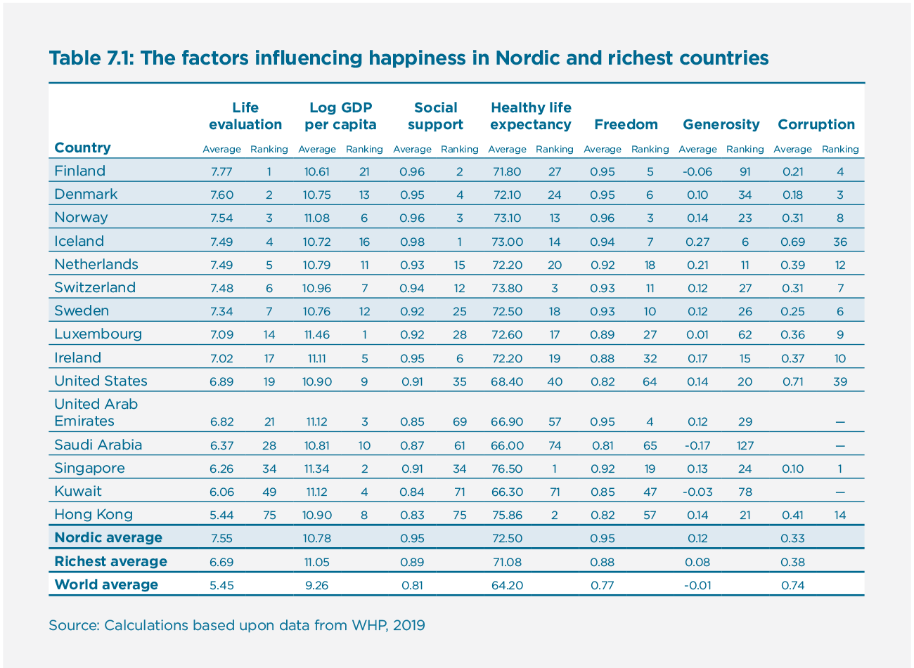
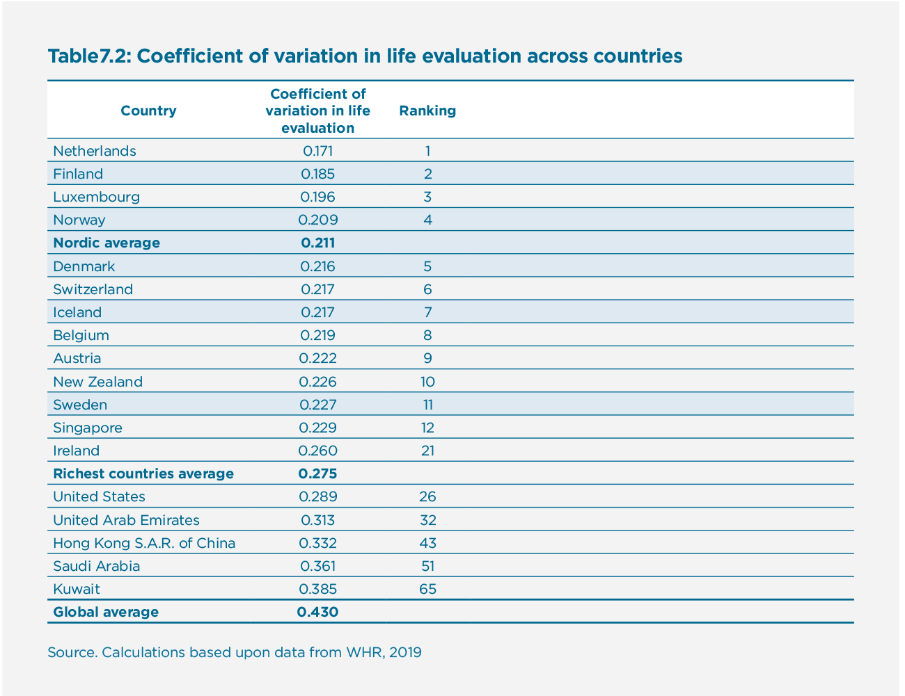

The Nordic Exceptionalism: What Explains Why the Nordic Countries Are Constantly Among the Happiest in the World
Introduction
From 2013 until today, every time the World Happiness Report (WHR) has published its annual ranking of countries, the five Nordic countries – Finland, Denmark, Norway, Sweden, and Iceland – have all been in the top ten, with Nordic countries occupying the top three spots in 2017, 2018, and 2019. Clearly, when it comes to the level of average life evaluations, the Nordic states are doing something right, but Nordic exceptionalism isn’t confined to citizen’s happiness. No matter whether we look at the state of democracy and political rights, lack of corruption, trust between citizens, felt safety, social cohesion, gender equality, equal distribution of incomes, Human Development Index, or many other global comparisons, one tends to find the Nordic countries in the global top spots.[1]
What exactly makes Nordic citizens so exceptionally satisfied with their lives? This is the question that this chapter aims to answer. Through reviewing the existing studies, theories, and data behind the World Happiness Report, we find that the most prominent explanations include factors related to the quality of institutions, such as reliable and extensive welfare benefits, low corruption, and well-functioning democracy and state institutions. Furthermore, Nordic citizens experience a high sense of autonomy and freedom, as well as high levels of social trust towards each other, which play an important role in determining life satisfaction. On the other hand, we show that a few popular explanations for Nordic happiness such as the small population and homogeneity of the Nordic countries, and a few counterarguments against Nordic happiness such as the cold weather and the suicide rates, actually don’t seem to have much to do with Nordic happiness.
Most of the potential explanatory factors for Nordic happiness are highly correlated with each other and often also mutually reinforcing, making it hard to disentangle cause from effect. Therefore, focusing on just a single explanation may result in distorted interpretations. For example, does trust in institutions and other citizens create a fertile ground for building a welfare state model with extensive social benefits? Or does the welfare state model contribute to low crime and corruption, which leads citizens to trust each other more? Most likely, both directions of influence play a role, leading to a self-reinforcing feedback loop that produces high levels of trust in the Nordic region, and a high-functioning state and society model. We seek insight on this by taking a brief look at the history of the Nordic countries, which helps us to identify some practical takeaways about what other countries could learn from the Nordic region to ignite a positive feedback loop and enhance the happiness of their citizens. As Thomas Jefferson noted in 1809, “The care of human life and happiness and not their destruction is the first and only legitimate object of good government.”[2]
Review of existing explanations
Many theories have been put forth to explain the high level of Nordic happiness, from successful modernization[3] and the ability to support better the less well off,[4] to high levels of social capital.[5] Here we review the most prominent theories to see the strength of their explanatory power as regards Nordic happiness. After having reviewed each explanation individually in this section, we turn to the more difficult question of how these factors are linked together, as there are crucial interlinks and feedback mechanisms between them.
Weather, smallness, homogeneity, and suicides - Dispelling four myths contradicting the idea of Nordic happiness
Before turning to what we see as the most probable explanations for Nordic happiness, we will dispel some myths that challenge Nordic happiness by discussing a few factors sometimes raised in popular press that in fact don’t have much to do with Nordic happiness.
First, it is true that the Nordic countries do not have the pleasant tropical weather that popular images often associate with happiness; rather, the Nordic winter tends to be long, dark, and cold. It is true that people account for changes in weather in their evaluations of life satisfaction, with too hot, too cold, and too rainy weather decreasing life satisfaction. However, effect sizes for changes in weather tend to be small, and are complicated by people’s expectations and seasonal patterns. For example, people in the tropics are found to be happier during winter but less happy during spring, as compared to people in more temperate zones.[6] Average weather is something people adapt to and thus typically doesn’t much affect the life satisfaction of those used to a given weather. Accordingly, although the warming of the weather due to climate change could slightly increase the life satisfaction of people living in cold countries such as the Nordic countries,[7] based on current evidence, weather probably doesn’t play a major role in increasing or decreasing Nordic happiness.
Second, there is a myth that in addition to high happiness metrics, the Nordic countries have high suicide rates, a seeming paradox. However, even though the Nordic countries, especially Finland, used to have relatively high suicide rates in the 1970s and 1980s, these rates have declined sharply since those days, and nowadays the reported suicide rates in the Nordic countries are close to the European average, and are also similar to rates in France, Germany, and the United States, for example.[8] Although wealthy countries, such as the Nordics, tend to have higher suicide rates than poorer countries,[9] in general, the same factors that predict higher life satisfaction tend to predict lower suicide rates. For example, higher national levels of social capital and quality of government predict both higher subjective well-being and lower suicide rates, while higher divorce rates predict more suicides and lower life satisfaction – although quality of government seems to have a bigger effects on life satisfaction and divorces on suicide.[10] Thus this seeming paradox seems to be based on outdated information,[11] as Nordic suicide rates are not especially high and are well predicted by the theoretical models where the same factors contribute to both higher life satisfaction in the Nordics and to lower suicide rates.
Third, it is often suggested that it is easier to build welfare societies in small and homogenous countries such as the Nordics, compared to larger and more diverse countries. However, research has not found a relationship, either negative or positive, between the size of a country’s population and life satisfaction. In addition, smaller countries on average are not more homogenous than larger countries.[12] In fact, today the Nordic countries are actually quite heterogenous, with some 19 % of the population of Sweden being born outside the country. Some empirical studies have found that increased ethnic diversity is associated with reduced trust. This is attributed to ethnically diverse societies having more difficulty generating and sharing public goods, but Eric Uslaner shows that it is not ethnic diversity per se, but rather ethnic residential segregation that undermines trust.[13] Corroborating this, other research has demonstrated that the economic inequality between ethnic groups, rather than cultural or linguistic barriers, seems to explain this effect of ethnic diversification leading to less public goods.[14] Thus the historical fact that the Nordic countries have not had an underclass of slaves or cheap labor imported from colonies could play some role in explaining the Nordic path to welfare societies. Furthermore, Charron & Rothstein[15] show that the effect of ethnic diversity on social trust becomes negligible when controlling for quality of government, indicating that in countries of high-quality institutions such as the Nordic countries, ethnic diversity might not have any effect on social trust. Furthermore, according to the analysis in World Happiness Report 2018, the ratio of immigrants within a country has no effect on the average level of happiness of those locally born, with the ten happiest countries having foreign-born population shares averaging 17.2 %, about twice as much as the world average.[16] Other studies have tended to find a small positive rather than negative effect of immigration on the well-being of locally born populations.[17] Ethnic homogeneity thus provides no explanation of Nordic happiness.
Also, immigrants within a country tend to be about as happy as people born locally.[18] As we argue later, quality of governmental institutions play a big part of Nordic happiness and these institutions serve all people living within the country, including immigrants. This is a probable explanation for the high ranking of the Nordics in the comparison of happiness of foreign-born people in various countries, in which Finland, Denmark, Norway, and Iceland occupy the top four spots, with Sweden seventh globally.[19] The well-being advantage of the Nordic countries thus extends also to those immigrating to these countries.
Welfare state generosity
Given that the Nordic countries are renowned for their welfare-state model with extensive social benefits, a natural candidate to explain Nordic happiness is the welfare state. Early analyses quantifying welfare as an aggregate measure of government welfare spending, like the percentage of GDP devoted to public welfare programs, tended to find no link between welfare expenditure and happiness, or even a negatively-correlated link.[20] Government spending as such thus seems not to be clearly linked to greater or worse life satisfaction, which is no surprise given that government spending is tightly linked to economic cycles and demographic changes, rather than an adequate measure for tracking the distribution and redistribution of goods and services. More recent work has tended to operationalize the welfare state in terms of the benefits (in-kind and in-cash) offered to citizens rather than mere spending as proportion of GDP, because the latter does not tell what the state actually provides for its citizens. In a longitudinal study of 18 industrial countries from 1971-2002, Pacek and Radcliff examine welfare state generosity by using an index capturing the extent of emancipation from market dependency in terms of pensions, income maintenance for the ill or disabled, and unemployment benefits, finding that welfare state generosity exerts a positive and significant impact on life satisfaction.[21] Another study that examined OECD countries found that indicators such as the extensiveness of welfare benefits and degree of labor market regulation had a significant positive association with life satisfaction.[22] This study also found that this effect is not moderated by people’s income, meaning that both poor and rich individuals and households benefit from more extensive government. Income security in case of unemployment plays a strong role in determining life satisfaction, as both unemployment and fear of unemployment strongly affect quality of life.[23] Furthermore, using Gallup World Poll data, Oishi et al. demonstrate that the positive link between progressive taxation and global life evaluation is fully mediated by citizens’ satisfaction with public and common goods such as health care, education, and public transportation that the progressive taxation helps to fund.[24] These and other studies[25] suggest that one secret to Nordic happiness is the institutional framework of the Nordic welfare state. People tend to be happier in countries where there is easy access to relatively generous welfare benefits, and where the labor market is regulated to avoid employee exploitation.[26]
Institutional quality
Quality of government is another key explanation often provided for the high life satisfaction of Nordic countries, because in comparisons of institutional quality, the Nordic countries occupy the top spots along with countries such as New Zealand and Switzerland.[27] Indeed, several studies have shown that people are more satisfied with their lives in countries that have better institutional quality.[28] While most of the evidence is cross-sectional, Helliwell et al. examined changes in government quality in 157 countries over the years 2005-2012, finding that improvements in quality tend to lead to improvements in well-being.[29] Moreover, as regards changes in well-being, changes in government quality explained as much as changes in GDP.
Typically, government quality has been divided into two dimensions: democratic quality and delivery quality.[30] The first is about the access to power including factors such as the ability to participate in selecting the government, freedom of expression, freedom of association, and political stability. The latter is about the exercise of power, including the rule of law, control of corruption, regulatory quality, and government effectiveness. These dimensions are typically deeply embedded into institutional practices of a given country, thereby promoting continuity and stabilizing people’s expectations. Studies have tended to find that it is the latter type of government quality, delivery quality, that is more strongly related to citizen happiness. However, in countries with high delivery quality, such as the Nordic countries, the quality of democracy plays an increasingly strong role in further explaining citizen life satisfaction.[31]
These studies demonstrate that the quality of the government and public institutions matter for life satisfaction. The Nordic countries tend to occupy the top spots in international comparisons of government quality, which helps to explain the high life satisfaction in these countries.
Income inequality
The Nordic countries are also famous for low levels of income inequality, but the evidence is not clear that a lack of income inequality is a potential explanation for high life satisfaction. Zagorski et al., for example, in their examination of 28 European countries, found that while inequality is negatively correlated with average life satisfaction, this effect disappears completely when controlled for GDP per capita.[32] This conclusion is supported by other research that similarly found no link between income inequality and well-being, while there are also studies that have found both negative and positive correlations between inequality and well-being.[33] The range of results from positive to negative to no connection suggest that no clear link exists between income inequality and well-being. Instead, this connection is sensitive to the inclusion of various covariates. However, if inequality leads to lower levels of perceived fairness and trust, and high levels of status anxiety and lack of economic and social opportunities, these factors might more directly contribute to a lower life satisfaction in the nation.[34] Furthermore, living in a highly-developed welfare state seems to have an impact on people’s perceptions of the acceptance of income inequality.[35] More particularly, Europeans prefer more equal societies, and inequality has a negative relation with happiness, especially among the poor in Europe.[36] Thus, low levels of inequality might be important for the happiness of Nordic citizens, even though the same direct effect is not visible in many other countries.
Freedom to make life choices
Autonomy and the freedom to make life choices are known to be connected to subjective well-being.[37] For example, a study of 63 countries showed that the degree to which autonomy and individualism were valued in those countries was a more consistent predictor of well-being (measured with anxiety, burnout, and general health) than national wealth.[38] Accordingly, the extent to which a country is able to provide individuals a sense of agency, freedom, and autonomy plays a significant role in explaining citizen happiness.[39] Using World Values Survey data from 1981 to 2007, Inglehart et al. showed that rises in national levels of sense of free choice were associated with similar rises in national levels of subjective well-being, with change in free choice explaining about 30% of the change over time in subjective well-being.[40] Other research has also demonstrated the importance of freedom to make life choices for national levels of happiness.[41] Inglehart et. al argue and demonstrate in their data that this sense of freedom is the result of three factors that feed into each other including material prosperity that liberates people from scarcity, democratic political institutions that liberate people from political oppression, and more tolerant and liberal cultural values that give people more room to express themselves and their unique identity.[42] For Inglehart, the Nordic countries constitute “the leading example of successful modernization, maximizing prosperity, social solidarity, and political and personal freedom.”[43] Thus the high sense of autonomy and freedom – and the resulting high well-being – that Nordic citizens experience can be attributed to relatively high material prosperity combined with well-functioning democracy and liberal values that prevail in the Nordic countries.
Trust in other people and social cohesion
Trust in other people has also been linked to citizen happiness. Several studies have demonstrated that various measures of social or horizontal trust are robustly correlated with life satisfaction, and that this relation holds even when controlling for factors such as Gross National Income per capita.[44] The most commonly used measure of generalized trust asks about whether most people can be trusted. Other measures of trust, such as whether people believe that a lost wallet will be returned to its owner, have been shown to be correlated with life satisfaction, as well.[45] In addition to between-country evidence, Helliwell et al. show using European Social Survey data that within-country changes in social trust are linked to significant changes in national levels of subjective well-being.[46] High levels of social trust also seem to make people’s well-being more resilient to various national crises.[47]
Furthermore, it has been argued that social cohesion, which is a broader notion than generalized trust, predicts well-being. In a recent study, Delhey and Dragolov defined social cohesion as having three dimensions including connectedness to other people, having good social relations, and having a focus on the common good. They found that both the aggregate level of social cohesion as well as each of the three dimensions individually were associated with higher well-being in a sample of 27 European Union countries.[48] The three Nordic countries included in the analysis – Denmark, Finland, and Sweden – occupy the top three positions in their index of social cohesion, making trust and social cohesion one additional explanation for the Nordic happiness.
Other explanations
The explanations of Nordic happiness mentioned in the review above are by no means an exhaustive list. Many other factors can be used to try to explain Nordic happiness. For example, economic insecurity and vulnerability to economic losses are detrimental for well-being. The Nordic countries, due to the extensive welfare benefits, are better able to make their citizens less vulnerable to economic insecurity than other countries.[49]
Research has also consistently shown that social comparisons matter for well-being. In assessing how good their lives are, humans often compare their own lives to the lives of those around them. This makes people’s subjective perception of their position in society more predictive of well-being than objective measures such as income.[50] However, this effect is moderated by the welfare state, because in Nordic countries with strong welfare states, people’s perceptions of their position in society have less influence on their own happiness than in other countries.[51] This is corroborated by findings according to which status anxiety, defined as the fear of failing to conform to the ideals of success laid down by society, tends to be lower in Nordic countries compared to most other countries measured.[52] The ethos of equality, manifested in universal public services that reduce social and economic risks, thus seems to be visible in and reinforced through a more egalitarian culture, as well. Furthermore, a comparison of United States and Denmark shows that the favorable difference in happiness for the Danes was particularly pronounced for low income citizens.[53] Being poor in Denmark does not have as harsh effect on happiness than in the US, where the gap between rich and poor is much larger and where there are not similar welfare services and public goods available for the poor. It thus seems possible that keeping up with the Joneses doesn’t carry as much weight in Nordic countries as in the US and many other countries.
Examining Nordic countries in WHR data
The World Happiness Report tends to use six factors as predictors of life evaluation: GDP per capita, social support, healthy life expectancy, freedom to make life choices, generosity, and corruption. Are the Nordic countries somehow different as regards these six factors? Among these factors, are there some in which the Nordic countries perform especially well, which could explain why Nordic countries are so happy?
To examine this issue, we take a look at the Gallup World Poll data as regards these factors. Given that the Nordic countries are all relatively rich (Nordic countries occupy a range from 6 (Norway) to 21 (Finland) in the 149-country ranking of GDP per capita), we are especially interested what factors beyond GDP per capita make the Nordic countries stand out. For this we compare the ten richest non-Nordic countries – Luxembourg, Singapore, United Arab Emirates, Kuwait, Ireland, Switzerland, Hong Kong, United States, and the Netherlands – with the five Nordic countries as regards the six predictors. This allows us to consider how the Nordic countries are able to produce more happiness than countries that have higher GDP.
Table 7.1: The factors influencing happiness in Nordic and richest countries

Table 7.1 shows that the Netherlands and Switzerland are in essence indistinguishable from the Nordic countries on the examined six factors: GDP per capita, social support, healthy life expectancy, freedom, generosity, and corruption. The Netherlands and Switzerland, along with the Nordic countries, rank high not only in life satisfaction, but also in social support, freedom to make life choices, and lack of corruption. In fact, the Nordic countries occupy the top positions across the world for social support, and are all in top ten for freedom. For lack of corruption, the Nordic countries are otherwise in the global top ten, but Iceland is surprisingly only 36th. This may reflect a recent banking crisis that revealed major economic and social irregularities among the Icelandic elite, which would make this low position temporary. As regards generosity, measured by how much people donate money to charity, there is more variability within the Nordic countries, with Finland being below world average and only Iceland making it into the top 10. This result might be specific to charity donations, because the Nordic countries tend to have high scores for comparisons of other types of prosocial behavior such as volunteering.[54] As regards healthy life expectancy, the Nordic countries are found in spots from 13 to 27. This is relatively high, but not best in the world. However, differences between countries are rather small in this variable. Thus, it seems that what unites the Nordic countries as regards these predictors of life satisfaction is high levels of social support, freedom to make life choices, and lack of corruption.
Recently, more attention has been given not only to the average levels of happiness in countries, but the degree of equality of happiness within countries. In other words, is the distribution of happiness narrow in the sense that responses cluster around the same average answer, or wide in the sense that there is a broad range of answers provided to questions about happiness? Some previous research suggests that happiness differences in Nordic countries might be smaller than in other countries[55], and accordingly we examine WHR data to see how equally distributed the happiness scores are in the Nordic countries as compared to the rest of the world. For this, we looked at the coefficients of variation calculated by dividing the standard deviations of life evaluation by the averages of life evaluation in 149 countries using the average of last three years data. We want to compare Nordic scores to global averages and to the scores of the ten richest countries in the world.
Table 7.2: Coefficient of variation in life evaluation across countries

As Table 7.2 shows, all Nordic countries are in the top eleven in the world as regards low levels of variance in life evaluations, well below the global average and the average of the richest countries. This means that there is less inequality in happiness in the Nordic countries and countries such as the Netherlands, Luxembourg, and Switzerland, meaning that people’s happiness scores tend to be closer to one another in these countries compared to other countries in the world. Of the top ten richest countries in the world, the Netherlands, Luxembourg, and Switzerland rank similarly to Nordic countries in terms of both high life satisfaction and low inequality of life satisfaction scores. In contrast, the other richest countries—the United States, United Arab Emirates, Hong Kong, and especially Saudi Arabia and Kuwait—have a more unequal distribution of happiness, and the average life satisfaction in these countries is lower than in the Nordics.
Finally, it is worth noting that high Nordic happiness levels are dependent on the measure of happiness used. The World Happiness Report and most other international comparisons use general life evaluation as the measure of citizen happiness. In the WHR, people are asked to make a general evaluation of their life on a Cantril ladder scale from 0 to 10, with the worst possible life as 0 and the best possible life as 10. In these studies, we consistently find the Nordic countries are the happiest in the world.
However, if instead of life satisfaction, we look at the data for the prevalence of positive emotions in various countries, we see that Latin American countries like Paraguay, Costa Rica, and Mexico, as well as Laos in Southeast Asia, occupy the top positions, with Iceland third in the world and other Nordic countries in positions ranging from 15 to 36.[56] Similarly, Gallup World Poll’s Positive Experience Index has nine Latin American countries and Indonesia in the top 10.[57] Nordic countries thus seem to be places where people experience quite frequent positive emotions, but they are not the countries where people report the most frequent positive emotions. Similarly, in a ranking of countries by lack of negative emotions, Iceland (3rd), Sweden (9th) and Finland (10th) make it into the top ten, while Denmark and Norway are 24th and 26th, respectively.[58] What these results demonstrate is the multidimensional nature of human wellness and well-being. High life satisfaction, on an individual or national level, is not a guarantee that one has high frequency of positive emotions or low frequency of negative emotions. Examining multiple indicators of happiness leads to a richer picture of the type and nature of national happiness.[59] When newspapers declared Denmark the happiest country on earth in 2012, 2013, and 2016, Norway in 2017, and Finland in 2018 and 2019, many citizens of these countries were taken by surprise, because they held much more melancholic self-images. Perhaps they were thinking about smiling, displays of joy or other indicators of positive affect, concluding rightly that they are not as prevalent in these countries as in some other countries. Yet, if they would have been thinking about life satisfaction, they very well could have concluded that yes, despite our grudges, citizens here tend to be quite satisfied with how their lives have turned out. As noted, of the multiple well-being measures, general life evaluation is the one most frequently used and recommended[60] for evaluating the well-being of countries, as it is more responsive than positive or negative emotions to changes in various national-level factors, such as wealth or policy decisions.
History and the Hunt for the Root Cause
The key difficulty in explaining Nordic exceptionalism is that the Nordic countries rank highly on such a number of well-being predicting indicators that it is hard to disentangle cause and effect. There are a cluster of factors that tend to co-occur, including high life satisfaction, high levels of social and institutional trust, high-quality democratic institutions, extensive welfare benefits, and social-economic equality, and this cluster of factors is nowhere else so strong as in the Nordics.[61] However, from the point of view of policy-makers interested in replicating the Nordic model, it is not particularly helpful to know just that all of these positive factors are concentrated in the same countries; rather, policy-makers need concrete ways to produce higher levels of happiness, and those can be hard to find. For example, Rothstein and Uslaner argue that if a country is trapped in a vicious cycle of low social and institutional trust, high corruption, and high levels of inequality, it can be hard to build the citizen and public servant trust needed to make the necessary reforms for a more trustworthy and representative system that serves all citizens equally.[62] The Nordic countries, in contrast, are arguably caught up in a virtuous cycle, where well-functioning and democratic institutions are able to provide citizens extensive benefits and security, so that citizens trust institutions and each other, which leads them to vote for parties that promise to preserve the welfare model.[63] Both of these situations might be thought of as relatively stable, and thus, the crucial question is how to get from a low-trust equilibrium to a high-trust equilibrium. Here, a historical look into how the Nordic countries made this leap provides some insight.
In the beginning of the modern era, the Nordic countries didn’t have the kind of feudalism and serfdom that characterized continental Europe and Russia. Farmers were relatively more independent and many of them owned the land they cultivated. Furthermore, in the decades leading to the twentieth century, farmers held significant political power, even within the Nordic parliaments.[64] Although there were class conflicts in the Nordic countries, as well – most dramatically the Finnish Civil War between leftist “reds” and rightist “whites” in 1918 that led to over 30,000 casualties – the divide in the Nordics was less deep than in most other countries during that era, making possible “a historical compromise” and the development of a “spirit of trust” between the laboring classes and the elite in the early decades of the twentieth century.[65] While in other Nordic countries, the transformation was peaceful, what is remarkable of the Finnish trajectory is how quickly after the civil war the unification of the country started. Many institutions were reconstructed in a few years. For instance, less than a year after the end of the war, the Social Democratic Party, which had been on the losing side of the war, was allowed to participate in general elections and became the biggest party in the parliament. Within a few years, most of the reforms that the left had fought for in the civil war, such as the agrarian land reform, had been implemented through parliamentary means.
One potential root cause for the Nordic model thus could be the fact that the Nordic countries didn’t have the deep class divides and economic inequality of most other countries at the beginning of the twentieth century. Research tends to show that inequality has a strong effect on generalized trust.[66] In more equal societies, people trust each other more. This increased trust contributes in the long term to a preference for a stronger and more universal welfare state. Although statistics about social trust do not exist from a hundred years ago, we know that levels of social trust tend to be remarkably stable over relatively long historical periods[67], supporting the role of social trust as contributing to the building of better institutions.
The quality of governmental institutions seems to also have been relatively good in the Nordic countries already in the late 19th century, with independent court systems able to handle corruption-related matters fairly well.[68] This made key institutions more trustworthy and reliable, giving both the common people and the elite the sense that reforms could be effective and would fulfill their purpose. Another important underlying factor might have been mass education. Uslaner and Rothstein have shown that the mean number of years of schooling in a country in 1870 is surprisingly strongly correlated with the corruption level of the same country in 2010, explaining 70% of its variance.[69] The Nordic countries invested heavily in universal and free education for all citizens, and one of the key goals was to produce citizens that have a strong national identity and sense of social cohesion, contributing to more social trust and institutional trust. Mass education was typically introduced in 19th century as a means of building stronger states.[70] Often this was related to external threats that scared the elites to push for reforms to make their states more efficient, meritocratic, and less corrupt because this was seen as necessary for the survival of the state in the face of these threats.[71]
As regards historical influences, some people argue that the legacy of the Protestant religion dominant in the Nordic countries contributes to Nordic exceptionalism. Indeed, in cross-cultural comparisons, Protestantism seems to be positively related to institutional quality and generalized trust, as well as higher life satisfaction.[72] However, given that there are relatively few Protestant countries in the world, it is hard to say whether this has something to do with religion itself or if it is just a historical coincidence. For example, Broms and Rothstein argue that it was not the religious doctrines of Protestantism that contributed to more inclusive state institutions later on, but rather the fact that the local parishes in Protestant countries were more inclusive, egalitarian, representative, and monetarily accountable already in the 16th century as compared to other religious institutions.[73] Rather than being an explanation for high institutional quality in Nordic countries, Protestant religious institutions might have been one part in the chain of historical institutional development taking place in the Nordic countries.
Accordingly, one way to try to understand the Nordic model is to state that high levels of social and institutional trust produced by mass education and relatively equal societal setting in the beginning of the 20th century made possible the public support for the welfare state policies that were introduced throughout the century, which further enhanced the social and institutional trust. Although there are many historical particularities and path dependencies that make the picture more complex, one could argue that the main flow of events towards the Nordic model started from low levels of inequality and mass education, which transformed into social and institutional trust, and later allowed for the formation of well-functioning welfare state institutions.[74]
Conclusion
The Nordic countries are characterized by a virtuous cycle in which various key institutional and cultural indicators of good society feed into each other including well-functioning democracy, generous and effective social welfare benefits, low levels of crime and corruption, and satisfied citizens who feel free and trust each other and governmental institutions. While this chapter focuses on the Nordic countries, a quick glance at the other countries regularly found at the top of international comparisons of life satisfaction – Switzerland, the Netherlands, New Zealand, Canada, and Australia – reveals that they also have most of the same elements in place. Thus, there seems to be no secret sauce specific to Nordic happiness that is unavailable to others. There is rather a more general recipe for creating highly satisfied citizens: Ensure that state institutions are of high quality, non-corrupt, able to deliver what they promise, and generous in taking care of citizens in various adversities.
Granted, there is a gap between knowing what a happiness-producing society looks like and transforming a certain society to follow that model. Low-trust societies easily get trapped into a vicious cycle where low levels of trust in corrupt institutions lead to low willingness to pay taxes and low support for reforms that would allow the state to take better care of its citizens. Thus, there is no easy path from the vicious cycle into a virtuous cycle. However, we shall give a few ideas for constructing what we see as helpful pathways.
Firstly, the quality of institutions plays a key role in ensuring citizen happiness. Thus, minimizing corruption and maximizing citizen participation and representation in various decisions can help to ensure that institutions serve citizens and maintain their trust. Democratic quality and factors such as free press, informed and educated citizens, and strong civic society play an important role in keeping the government accountable and citizen-oriented.
On a cultural level, arguably the most important factor is to generate a sense of community, trust, and social cohesion among citizens. A divided society has a hard time providing the kind of public goods that would universally support each citizen’s ability to live a happier life. In a divided society, people also tend to be less supportive of various welfare benefits because worry they would benefit the ‘other’ groups, as well. When people care about each other and trust each other, this provides a much more stable base on which to build public support for various public goods and welfare benefit programs.
Thus, institutionally, building a government that is trustworthy and functions well, and culturally, building a sense of community and unity among the citizens are the most crucial steps towards a society where people are happy. While the Nordic countries took their own particular paths to their current welfare state model, each country must follow its own path. If citizen well-being and happiness are truly the goals of government, then taking seriously research on institutional and cultural determinants of citizen happiness is the first step in starting an evidence-based journey towards fulfilling that goal.
References
Akay, A., Constant, A., & Giulietti, C. (2014). The impact of immigration on the well-being of natives. Journal of Economic Behavior & Organization, 103, 72–92.
Alesina, A., Baqir, R., & Easterly, W. (1999). Public goods and ethnic divisions. The Quarterly Journal of Economics, 114(4), 1243–1284.
Alesina, A., Di Tella, R., & MacCulloch, R. (2004). Inequality and happiness: are Europeans and Americans different? Journal of Public Economics, 88(9–10), 2009–2042.
Algan, Y., & Cahuc, P. (2010). Inherited trust and growth. American Economic Review, 100(5), 2060–92.
Baldwin, K., & Huber, J. D. (2010). Economic versus cultural differences: Forms of ethnic diversity and public goods provision. American Political Science Review, 104(4), 644–662.
Betz, W., & Simpson, N. B. (2013). The effects of international migration on the well-being of native populations in Europe. IZA Journal of Migration, 2(12), 1–21.
Biswas-Diener, R., Vittersø, J., & Diener, E. (2010). The Danish effect: Beginning to explain high well-being in Denmark. Social Indicators Research, 97(2), 229–246.
Bjørnskov, C. (2003). The happy few: Cross–country evidence on social capital and life satisfaction. Kyklos, 56(1), 3–16.
Bjørnskov, C. (2007). Determinants of generalized trust: A cross-country comparison. Public Choice, 130(1–2), 1–21.
Bjørnskov, C., Dreher, A., & Fischer, J. A. (2007). The bigger the better? Evidence of the effect of government size on life satisfaction around the world. Public Choice, 130(3–4), 267–292.
Bjørnskov, C., Dreher, A., & Fischer, J. A. (2010). Formal institutions and subjective well-being: Revisiting the cross-country evidence. European Journal of Political Economy, 26(4), 419–430.
Bjørnskov, C., & Tsai, M.-C. (2015). How Do Institutions Affect Happiness and Misery? A Tale of Two Tails. Comparative Sociology, 14(3), 353–385.
Broms, R., & Rothstein, B. (2020). Religion and institutional quality: Long-term effects of the financial systems in Protestantism and Islam. Comparative Politics, Advance Online Publication.
Charron, N., & Rothstein, B. (2018). Regions of trust and distrust: How good institutions can foster social cohesion. In U. Bernitz, M. Mårtensson, L. Oxelheim, & T. Persson (Eds.), Bridging the prosperity gap in the EU. The social challenges ahead (pp. 220–242). Cheltenham, UK.: Edward Elgar Publishing.
Connolly, M. (2013). Some like it mild and not too wet: The influence of weather on subjective well-being. Journal of Happiness Studies, 14(2), 457–473.
Chirkov, V., Ryan, R. M., Kim, Y., & Kaplan, U. (2003). Differentiating autonomy from individualism and independence: A self-determination theory perspective on internalization of cultural orientations and well-being. Journal of Personality and Social Psychology, 84(1), 97–110.
Daly, M. C., Oswald, A. J., Wilson, D., & Wu, S. (2011). Dark contrasts: The paradox of high rates of suicide in happy places. Journal of Economic Behavior & Organization, 80(3), 435–442.
Deci, E. L., & Ryan, R. M. (2000). The“ what” and“ why” of goal pursuits: Human needs and the self-determination of behavior. Psychological Inquiry, 11(4), 227–268.
Delhey, J., & Dragolov, G. (2013). Why inequality makes Europeans less happy: The role of distrust, status anxiety, and perceived conflict. European Sociological Review, 30(2), 151–165.
Delhey, J., & Dragolov, G. (2016). Happier together. Social cohesion and subjective well-being in Europe. International Journal of Psychology, 51(3), 163–176.
Delhey, J., & Newton, K. (2005). Predicting Cross-National Levels of Social Trust: Global Pattern or Nordic Exceptionalism? European Sociological Review, 21(4), 311–327. https://doi.org/10.1093/esr/jci022
Ejrnæs, A., & Greve, B. (2017). Your position in society matters for how happy you are. International Journal of Social Welfare, 26(3), 206–217. https://doi.org/10.1111/ijsw.12233
Elgar, F. J., & Aitken, N. (2011). Income inequality, trust and homicide in 33 countries. European Journal of Public Health, 21(2), 241–246.
Eurostat. (2018). Just over 56 000 persons in the EU committed suicide. Retrieved from https://ec.europa.eu/eurostat/web/products-eurostat-news/-/DDN-20180716-1
Fischer, R., & Boer, D. (2011). What is more important for national well-being: money or autonomy? A meta-analysis of well-being, burnout, and anxiety across 63 societies. Journal of Personality and Social Psychology, 101(1), 164–184.
Flavin, P., Pacek, A. C., & Radcliff, B. (2011). State intervention and subjective well-being in advanced industrial democracies. Politics & Policy, 39(2), 251–269.
Flavin, P., Pacek, A. C., & Radcliff, B. (2014). Assessing the impact of the size and scope of government on human well-being. Social Forces, 92(4), 1241–1258.
Freedom House. (2019). Freedom in the world 2019. Washington D.C.: Freedom House.
Gallup Inc. (2018). Peace, security still out of reach for many worldwide. Retrieved from https://news.gallup.com/poll/235391/peace-security-reach-worldwide.aspx
Gallup Inc. (2019). Gallup Global Emotions. Washington D.C.: Gallup.
Greve, B. (2017). How to measure social progress? Social Policy & Administration, 51(7), 1002–1022.
Habyarimana, J., Humphreys, M., Posner, D. N., & Weinstein, J. M. (2007). Why does ethnic diversity undermine public goods provision? American Political Science Review, 101(4), 709–725.
Hacker, J. S. (2018). Economic security. In J. Stiglitz, J.-P. Fitoussi, & M. Durand (Eds.), For Good Measure: Advancing Research on Well-being Metrics Beyond GDP (pp. 203–240). Retrieved from https://www.oecd-ilibrary.org/economics/for-good-measure/economic-security_9789264307278-10-en
Hagerty, M. R. (2000). Social comparisons of income in one’s community: Evidence from national surveys of income and happiness. Journal of Personality and Social Psychology, 78(4), 764–771.
Haller, M., & Hadler, M. (2006). How social relations and structures can produce happiness and unhappiness: An international comparative analysis. Social Indicators Research, 75(2), 169–216.
Helliwell, J. F., & Huang, H. (2008). How’s your government? International evidence linking good government and well-being. British Journal of Political Science, 38(4), 595–619.
Helliwell, J. F., Huang, H., Grover, S., & Wang, S. (2018). Empirical linkages between good governance and national well-being. Journal of Comparative Economics, 46(4), 1332–1346.
Helliwell, J. F., Huang, H., & Wang, S. (2014). Social Capital and Well-Being in Times of Crisis. Journal of Happiness Studies, 15(1), 145–162. https://doi.org/10.1007/s10902-013-9441-z
Helliwell, J. F., Huang, H., & Wang, S. (2018). New evidence on trust and well-being. In E. M. Uslaner (Ed.), The Oxford Handbook of Social and Political Trust (p. 409). Oxford University Press.
Helliwell, J. F., Huang, H., & Wang, S. (2019). Changing world happiness. In J. F. Helliwell, R. Layard, & J. Sachs (Eds.), World Happiness Report 2019 (pp. 10–45). New York: Sustainable Development Solutions Network.
Helliwell, J. F., Huang, H., Wang, S., & Shiplett, H. (2018). International migration and world happiness. In J. F. Helliwell, R. Layard, & J. Sachs (Eds.), World Happiness Report 2018 (pp. 13–44). New York: Sustainable Development Solutions Network.
Helliwell, J. F., & Wang, S. (2011). Trust and Wellbeing. International Journal of Wellbeing, 1(1), 42–78. https://doi.org/10.5502/ijw.v1i1.9
Inglehart, R. (2010). Faith and freedom: Traditional and modern ways to happiness. In E. Diener, D. Kahneman, & J. Helliwell (Eds.), International Differences in Well-Being (pp. 351–397). Oxford University Press.
Inglehart, R., Foa, R., Peterson, C., & Welzel, C. (2008). Development, freedom, and rising happiness: A global perspective (1981–2007). Perspectives on Psychological Science, 3(4), 264–285.
Martela, F., & Sheldon, K. M. (2019). Clarifying the concept of well-being: Psychological need-satisfaction as the common core connecting eudaimonic and subjective well-being. Review of General Psychology, 23(4), 458–474.
Miner, M., & Rawson, H. (Eds.). (2006). The Oxford Dictionary of American Quotations - Second Edition. New York: Oxford University Press.
Ochsen, C., & Welsch, H. (2012). Who benefits from labor market institutions? Evidence from surveys of life satisfaction. Journal of Economic Psychology, 33(1), 112–124.
OECD. (2013). OECD Guidelines on Measuring Subjective Well-being. Paris: OECD Publishing.
OECD. (2019). Income inequality indicator (Gini coefficient). https://doi.org/10.1787/459aa7f1-en
Oishi, S., & Diener, E. (2014). Residents of Poor Nations Have a Greater Sense of Meaning in Life Than Residents of Wealthy Nations. Psychological Science, 25(2), 422–430.
Oishi, S., Kesebir, S., & Diener, E. (2011). Income inequality and happiness. Psychological Science, 22(9), 1095–1100.
Oishi, S., Schimmack, U., & Diener, E. (2012). Progressive Taxation and the Subjective Well-Being of Nations. Psychological Science, 23(1), 86–92.
Ott, J. C. (2005). Level and inequality of happiness in nations: Does greater happiness of a greater number imply greater inequality in happiness? Journal of Happiness Studies, 6(4), 397–420.
Ott, J. C. (2010). Good governance and happiness in nations: Technical quality precedes democracy and quality beats size. Journal of Happiness Studies, 11(3), 353–368.
Ott, J. C. (2011). Government and happiness in 130 nations: Good governance fosters higher level and more equality of happiness. Social Indicators Research, 102(1), 3–22.
Pacek, A. C., & Radcliff, B. (2008). Welfare policy and subjective well-being across nations: An individual-level assessment. Social Indicators Research, 89(1), 179–191.
Pendergast, P. M., Wadsworth, T., & Kubrin, C. E. (2019). Suicide in Happy Places: Is There Really a Paradox? Journal of Happiness Studies, 20(1), 81–99.
Peng, Y.-F., Tang, J.-H., Fu, Y., Fan, I. -chu., Hor, M.-K., & Chan, T.-C. (2016). Analyzing Personal Happiness from Global Survey and Weather Data: A Geospatial Approach. PLOS ONE, 11(4), e0153638.
Plagnol, A. C., & Huppert, F. A. (2010). Happy to help? Exploring the factors associated with variations in rates of volunteering across Europe. Social Indicators Research, 97(2), 157–176.
Pugno, M. (2016). On the foundations of happiness in economics: reinterpreting Tibor Scitovsky. Oxon: Routledge.
Rehdanz, K., & Maddison, D. (2005). Climate and happiness. Ecological Economics, 52(1), 111–125.
Rose, A. K. (2006). Size really doesn’t matter: In search of a national scale effect. Journal of the Japanese and International Economies, 20(4), 482–507.
Rothstein, B. (2010). Happiness and the Welfare State. Social Research, 77(2), 441–468.
Rothstein, B., & Teorell, J. (2015). Getting to Sweden, Part II: Breaking with Corruption in the Nineteenth Century. Scandinavian Political Studies, 38(3), 238–254.
Rothstein, B., & Uslaner, E. M. (2005). All for all: Equality, corruption, and social trust. World Politics, 58(1), 41–72.
Rözer, J., & Kraaykamp, G. (2013). Income inequality and subjective well-being: A cross-national study on the conditional effects of individual and national characteristics. Social Indicators Research, 113(3), 1009–1023.
Schneider, S. M. (2012). Income Inequality and its Consequences for Life Satisfaction: What Role do Social Cognitions Play? Social Indicators Research, 106(3), 419–438.
Schneider, S. M. (2016). Income Inequality and Subjective Wellbeing: Trends, Challenges, and Research Directions. Journal of Happiness Studies, 17(4), 1719–1739.
Stanca, L. (2010). The Geography of Economics and Happiness: Spatial Patterns in the Effects of Economic Conditions on Well-Being. Social Indicators Research, 99(1), 115–133.
Teorell, J., & Rothstein, B. (2015). Getting to Sweden, part I: War and malfeasance, 1720–1850. Scandinavian Political Studies, 38(3), 217–237.
Transparency International. (2019). Corruption Perceptions Index.
Tsutsui, Y. (2013). Weather and individual happiness. Weather, Climate, and Society, 5(1), 70–82.
UNDP. (2019). Human Development Report 2019. New York: United Nations Development Programme.
Uslaner, E. M. (2012). Segregation and mistrust: diversity, isolation, and social cohesion. Cambridge: Cambridge University Press.
Uslaner, E. M., & Brown, M. (2005). Inequality, trust, and civic engagement. American Politics Research, 33(6), 868–894.
Uslaner, E. M., & Rothstein, B. (2016). The historical roots of corruption: State building, economic inequality, and mass education. Comparative Politics, 48(2), 227–248.
Veenhoven, R. (2000). Well-being in the welfare state: Level not higher, distribution not more equitable. Journal of Comparative Policy Analysis: Research and Practice, 2(1), 91–125.
WEF. (2017). The Global Gender Gap Report. Cologny, Switzerland: World Economic Forum.
Welzel, C. (2013). Freedom rising - Human empowerment and the quest for emancipation. New York: Cambridge University Press.
Welzel, C., & Inglehart, R. (2010). Agency, Values, and Well-Being: A Human Development Model. Social Indicators Research, 97(1), 43–63. https://doi.org/10.1007/s11205-009-9557-z
WHO. (2018). Global Health Observatory data repository: Suicide rate estimates by country. Retrieved from https://www.who.int/gho/mental_health/suicide_rates/en/
Zagorski, K., Evans, M. D., Kelley, J., & Piotrowska, K. (2014). Does national income inequality affect individuals’ quality of life in Europe? Inequality, happiness, finances, and health. Social Indicators Research, 117(3), 1089–1110.
Endnotes
Greve, 2017. References for relevant rankings are: state of democracy and political rights (Freedom House, 2019), lack of corruption (Transparency International, 2019), trust between citizens (Delhey & Newton, 2005), felt safety (Gallup Inc., 2018), social cohesion (Delhey & Dragolov, 2016), gender equality (WEF, 2017), equal distribution of incomes (OECD, 2019), Human Development Index (UNDP, 2019). ↩︎
Quoted in Miner & Rawson, 2006. ↩︎
Inglehart, 2010. ↩︎
Biswas-Diener, Vittersø, & Diener, 2010. ↩︎
Bjørnskov, 2003. ↩︎
See Connolly, 2013; Peng et al., 2016; Rehdanz & Maddison, 2005. For small effect sizes, see, e.g. Tsutsui, 2013, for gender specific effects, see Connolly, 2013, for seasonal patterns, see Peng et al., 2016. ↩︎
As suggested by Rehdanz & Maddison, 2005. ↩︎
See WHO, 2018; Eurostat, 2018. ↩︎
See Oishi & Diener, 2014 ↩︎
For evidence on social capital, see Helliwell 2007. For divorce rates and quality of governance, see Helliwell 2006. ↩︎
One much publicized study of states within US linked higher happiness and higher suicide rates, see Daly et al. 2011, but a more recent study found no relationship between subjective well-being and suicide rates between US states, see Pendergast et al. 2019. ↩︎
For research on smallness of country and well-being, see Stanca, 2010 and Rose, 2006. ↩︎
For studies linking ethnic diversity and reduced trust, see Bjørnskov, 2007; Delhey & Newton, 2005. For suggestions that ethnically diverse countries have a harder time generating and sharing public goods, see Alesina, Baqir, & Easterly, 1999; Habyarimana, Humphreys, Posner, & Weinstein, 2007. For Uslaner’s study, see Uslaner, 2012. ↩︎
See Baldwin & Huber, 2010; see also Habyarimana et al., 2007. ↩︎
Charron & Rothstein (2018) ↩︎
Helliwell, Huang, Wang, & Shiplett, 2018. ↩︎
See Akay et al. 2014; Betz & Simpson, 2013. ↩︎
Helliwell, Huang, Wang, & Shiplett, 2018. ↩︎
See Helliwell, Huang, Wang, & Shiplett, 2018. ↩︎
For no link, see e.g. Veenhoven, 2000, for negative link see, e.g., Bjørnskov, Dreher, & Fischer, 2007 ↩︎
Pacek and Radcliff, 2008. ↩︎
Flavin, Pacek, & Radcliff, 2014. ↩︎
Hacker, 2018; Pugno, 2016. ↩︎
Oishi et al. 2011. ↩︎
See, e.g., Flavin, Pacek, & Radcliff, 2011; Ochsen & Welsch, 2012. ↩︎
Flavin et al., 2014. ↩︎
See e.g. Ott, 2011. ↩︎
See Bjørnskov, Dreher, & Fischer, 2010; Helliwell & Huang, 2008; Ott, 2010. ↩︎
Helliwell et al. 2018. ↩︎
See, e.g., Helliwell & Huang, 2008; Helliwell, Huang, Grover, et al., 2018; Ott, 2011. ↩︎
See Bjørnskov et al., 2010; Bjørnskov & Tsai, 2015; Helliwell & Huang, 2008; Helliwell, Huang, Grover, et al., 2018. ↩︎
Zagorski et al. 2014. ↩︎
For negative link, see e.g. Hagerty, 2000; Oishi, Kesebir, & Diener, 2011, for positive link, see e.g. Ott, 2005; Rözer & Kraaykamp, 2013. For a review of various results, see Schneider, 2016. ↩︎
See Delhey & Dragolov, 2013; Oishi et al., 2011. ↩︎
See Schneider, 2012. ↩︎
Alesina, Di Tella, & MacCulloch, 2004. ↩︎
See, e.g., Chirkov, Ryan, Kim, & Kaplan, 2003; Deci & Ryan, 2000. ↩︎
Fischer & Boer, 2011. ↩︎
Welzel & Inglehart, 2010. ↩︎
Inglehart et al. 2008. ↩︎
See e.g. Helliwell, Huang, Grover, et al., 2018; Helliwell, Huang, & Wang, 2019. ↩︎
Inglehart et al., 2008; see also Welzel, 2013. ↩︎
The quote is from Inglehart 2010, pp. 384–385. ↩︎
E.g. Bjørnskov, 2003; Helliwell, Huang, & Wang, 2018. ↩︎
For lost wallet measure, see Helliwell & Wang, 2011. ↩︎
Helliwell et al. 2018. ↩︎
Helliwell, Huang, & Wang, 2014. ↩︎
Delhey and Dragolov 2016. ↩︎
See Hacker, 2018. ↩︎
See Ejrnæs & Greve, 2017. ↩︎
Ejrnæs & Greve, 2017. ↩︎
See Delhey & Dragolov, 2013. ↩︎
Biswas-Diener et al., 2010. ↩︎
See Plagnol & Huppert, 2010. ↩︎
See Biswas-Diener et al., 2010. ↩︎
Based on WHR, 2019, Online Data ↩︎
Gallup, 2019. ↩︎
Based on WHR, 2019, Online Data. ↩︎
As argued by, e.g., Martela & Sheldon, 2019. ↩︎
See, e.g., the recommendations by OECD in OECD, 2013. ↩︎
See Rothstein, 2010. ↩︎
Rothstein and Uslaner 2005. ↩︎
Rothstein, 2010. ↩︎
Rothstein & Uslaner, 2005. ↩︎
Rothstein & Uslaner, 2005, p. 58. ↩︎
Elgar & Aitken, 2011; Uslaner & Brown, 2005. ↩︎
See e.g. Algan & Cahuc, 2010. ↩︎
Rothstein & Teorell, 2015. ↩︎
Uslaner and Rothstein 2016. ↩︎
Uslaner & Rothstein, 2016. ↩︎
Teorell & Rothstein, 2015. ↩︎
See Broms & Rothstein, 2020, Haller & Hadler, 2006. ↩︎
Broms and Rothstein 2020. ↩︎
Rothstein & Uslaner, 2005; Uslaner & Rothstein, 2016. ↩︎